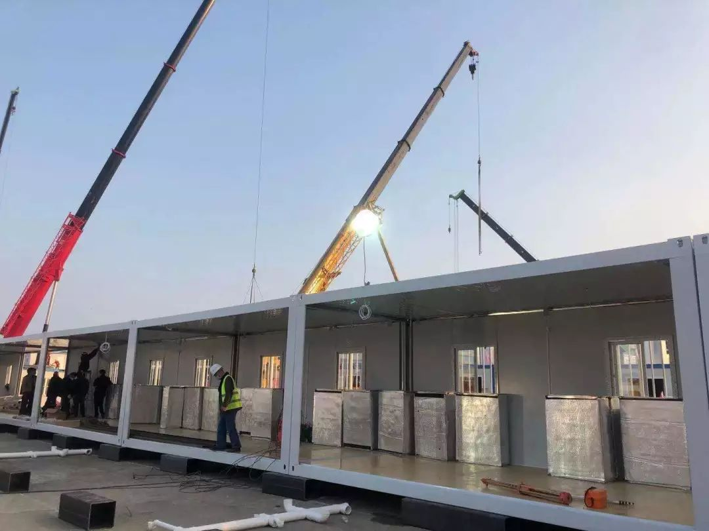

火神山“三千勇士” |武汉肺炎亲历-中经实时报-中国经营网
原文链接 备份链接 火神山“三千勇士” |武汉肺炎亲历 2020-01-28 08:20 作者：王迎春 来源：中国经营网 本报记者 王迎春 武汉报道 1月27日，武汉市蔡甸区知音湖畔，占地5万平方米的滩涂草坡地完全变了模样，工人们正在操作 …

今天，火神山医院正式交付。9天时间，可容纳1000张床位的医院在武汉落成，参照非典期间北京小汤山医院模式，专门收治新型冠状病毒肺炎患者。在医院床位紧缺的情况之下，大家对火神山和雷神山给予了期望，而实际效果如何，能多大程度缓解目前的压力，还是未知数。
我们在2月1日晚，联系到了一位参与火神山医院项目的工程师，他已回到武汉家中，在家自主隔离，他向我们讲述了这些天的心路历程。
采访 | 二维酱
口述 | 叶秋
“你想去就去，
保护好自己就行了”
腊月26的时候，疫情的消息变得严峻起来，我跟媳妇开玩笑说，武汉有可能也要搞个“小汤山”，如果这样，我肯定得上。因为我们单位在武汉算是龙头企业。
除夕的前一天，我们得到了正式消息。领导在群里问了一句，有多少人在武汉？清点了一遍，拉了群，告诉我们：现在要建武汉“小汤山”，需要兄弟们顶上。
有个兄弟先说了句“若有战，召必回”，然后所有人都齐刷刷地打出了这句话。是的，“若有战，召必回，战必胜”，我们打的是一场没有退路的仗。
收到消息的时候我在家里陪着两个娃看电影，享受难得的一家人在一起时光。公司头一天刚刚才刚开完会放假。在群里发消息时没有犹豫，但怎么跟家人说，我犹豫了。我晚饭的时候和媳妇说项目有点事，明天要去一下。想着先去看看情况，或许每天还能回来一趟。但是媳妇太了解我了，起了疑心，一直追问我到半夜，问我到底要去干嘛。不得已之下，我才把手机递给她看。
我知道，现在出去，她肯定会很担心。不过她看了之后，没说话，过了一会儿说，“你想去就去，保护好自己就行了。”
其实我们已经得到一些信息，知道情况很严重，在医院工作的同学朋友很早就给我们打电话，说有人传人了，要我们戴好口罩，多注意。
新型冠状病毒刚刚报道出来人传人的时候，有一个当医生的朋友给我发了个视频，里面有个上了年纪的老爹爹，只剩最后一口气了，奄奄一息坐在那儿，他老伴站在旁边哭，其实也快不行了，有气无力地喊着，谁能救救我们。朋友给我发这个视频，是想让我看看真实的情况，提醒我们和家里长辈多做工作，能不出门就别出门。这个视频对我的触动其实挺大的，尤其是两位老人眼中流露出的对生命的渴望和对现实的绝望。我看了之后，心里很难受，跟我媳妇说我去洗个澡，然后冲着水偷偷流了会儿眼泪。当时我就对自己说要做点什么，不行就去中南医院做个志愿者帮帮忙，能出多少力出多少力。没想到要去另外一个战场。
其实在确定要去火神山前一天晚上的时候，我心里还是有点怕的。钟老爷子来了武汉之后，每一天确诊和疑似人数直线上升，武汉各家医院一床难求。但是这里是武汉，这里是我的家，一个生我养我看着我成长的地方，我小学、中学、大学一直到结婚生子都在武汉。
哪怕是工作后跟着单位走南闯北，全是跑遍了大半个中国，最后还是想在武汉，宁愿降薪也好，不升职也好，就想待在武汉。只有在武汉才能有那种家乡的感觉，没出去的时候没感觉，真的出去了，千言万语汇成的就是一句，我要回武汉。
在武汉封城那天，前一天晚上十点左右知道消息，我问过媳妇要不要回她老家随州。当时想法是媳妇老家有一个三百多平大院子，就算不出门两个娃过去了也可以开心地玩一会，后期武汉长期不出门，两个娃在家憋屈的很。但是转念一想，就算出去了，也是待在家里，这种时候，武汉出去的肯定不受待见。而且想着武汉的医疗条件怎么也比周边地区好，况且前期武汉都不够重视，周边地区更不会重视，后期疫情是什么情况真不好说，还不如在家关着不出门安心。
我的两个孩子还比较小，儿子五岁，闺女七岁，还不太能理解这件事。给他们看了些视频，说现在外面很多人生病了，这个病传染性很强，我们要注意勤洗手、戴口罩。走之前，我跟他们说，“爸爸明天要出去打仗去了。”我儿子还挺开心的，男孩子总是对打仗有一种莫名的渴望。闺女倒是有点害怕，怯生生地和我说要我注意安全。
我跟领导说的第二天早上去报道，天没亮五点左右就出发了，从我家开车过去大概50公里。出门的时候比较洒脱，什么也没带，因为想着车里有个简单的洗漱包和几件换洗衣服。我当时觉得可能每天回，最多两三天也能回一趟家，后来发现根本回不来的。
有几天忙得忘记跟家人联系
到工地的时候，已经有我们公司已经有三十多个管理人员到了，现场有一些挖机在工作，大概20多台。
我主要负责集装箱的调配，分装，一方面联系厂家，从各地运过来，一方面跟设计对接。前几天集装箱没有施工的时候主要在工地上帮助协调现场，后面涉及到集装箱的拼装，要在外面拼好了，再送过来。所以需要不断往返跑，每天来回要过近十次临检。在火神山周围有很多道临检，有的是测体温，有的是检查通行证、管理人员工作证。
平均每天走的步数应该都能超过3万。手机这时候就成了一种负担，每次听着电话响起头皮就一阵发麻，因为这可能意味着新的变动，之前做的好多又是无用功。
刚过去的时候，每天都有很多朋友打电话来问我，是不是在火神山，那边情况怎么样，还有想看现场照片的。多了就很烦，前前后后有上百个这样的电话，各种亲戚朋友同学都来问。我能理解大家对这边的好奇，但是真的忙到没时间去和大家分享这边的见闻。
大家的工作时间说是白天晚上两班倒，其实都没这么做，太累了回去休息一下，醒了第一时间又回到现场。我一般晚上工作到十一二点，早上一般五六点起床就去了。除夕那天是最忙的，第一天七点到工地，第二天中午吃了饭才回项目休息。对于什么时候跨年的之类的，真的没功夫去留意。有时候在工地上看到新来的同事，大家相互打个招呼说一句“新年快乐”，更多的就是一个礼貌的问候，这个时候，哪有人会有心情过年。
我住的是周边项目的项目部，但是因为来的人比较多，后面到的兄弟们安排到了附近的宾馆。工地上搭了几个大帐篷作为我们的临时补给点和检查点，到了饭点我们就去那边拿盒饭，一般有三四个菜。拿好了，就在边上随便找个地方吃，大家都自觉保持一定的距离。
我们在工地上，除了日常的安全帽之类的，就多了个口罩。从第三天开始，在帐篷这里有专门的人发放口罩，回收口罩，一天三次测量体温。这个病估计还是和个人免疫系统有关，平时在现场劳动多的人身体都还不错，基本没人出现问题，只有头两天因为下了雨施工有一两个人感冒了，谨慎起见还是对他们进行了隔离。
除了第一天资源还没调配到位，条件差一点，后面条件都挺好的，物资也比较充足。在这里也非常感谢许多热心人士的捐助，让我们在后勤采购方面的压力减轻不少。
医院在这块的压力就比我们大多了。大年三十那天五医院防护用品弹尽粮绝，我有个在日本的朋友，托我去给在五院工作的父亲送点口罩，初一我起来第一件事就是赶到五医院，但我根本送不进去，请他们护士长出来拿但是他们用不了，因为我们口罩标准低，他们不能用。我朋友父亲他是医院的外科一把刀，人手不够上一线了，在重症区隔离了我进不去。打电话都是别人代为转告的。他说，你回去安心做你的，我安心做我的，这次疫情过去了我们再一起喝杯酒。
我现在不清楚他的情况，也不想去打听。也许没消息就是最好的消息。
家里人有时会问几句情况怎么样了，保重身体之类的。但有几天是完全没联系，其实是我忙得忘记了。
在火神山跟在家是全然不同的心情，在家里出发前可能还有惶恐、害怕、紧张之类的情绪，出去了，什么乱七八糟的情绪都不会有。所有的喜怒哀乐都是随着一些工作上的事情而波动，其他的事，根本没时间去想。
前几天阴雨，我们还很担心混凝土浇筑后的凝期问题。好在后面几天是晴天，天公作美，温度也好，给我们节约了很多时间。总体还是比较顺利的。
修建速度快，其实没什么好惊讶的，对我们开始就是一个工期特别紧的抢工项目，其实技术含量并不是那么大。外媒称赞“中国速度”，其实中国速度一直都很快，远比他们想象的快，中国的建筑行业是真的很强的。
孩子想抱我，
我赶紧拦住了
吃饭的时候会看一下疫情相关的新闻，一个是看看数据，感染人数、死亡人数，看看有没有新的辟谣信息。
有些消息真的很好笑，比如昨天的双黄连。其实昨天正好我有点咳嗽，就跑去药店买了些止咳药，随便拿了几盒药，里面就有双黄连。晚上看到新闻，我还跟周围朋友开玩笑说，我这里有两盒双黄连，高价卖，一盒200。太假了，压根没效果。一个特大型研究所出这么一个没有任何依据的报告，我不知道他们的羞耻心在哪里。
网上火神山施工现场直播很火，我是很晚才知道，是朋友跟我打电话说起来。取的外号我就知道一个“宋高宗”（汽车吊还是随车吊还真没弄清楚），知道是因为有同学非要我给他发个现场照片，我就随便拍了一下，他就说这是“宋高宗”啊，我有点懵，不知道什么意思，他还给我解释了半天。还夹杂着什么小红小蓝之类的，我还真记不住，没法想象这一个个工程机械弄的和宠物一样的名字。

施工现场拍摄
有人和我说这个监控什么的非常高科技之类的，其实我们大多项目施工的时候也会安装监控，上面还会有当时的温度湿度扬尘状态的数据，就是日常工作的一部分，很平淡。大家有这种兴趣应该是在家憋久了吧，要是能出去玩的话，谁想看人玩泥巴。

施工现场直播
施工的时候其实没什么心情，包括知道可以回家了，也没什么感觉，只有抢工后的疲惫。这个施工任务其实不难，就是工期压力太紧，对完成任务还是比较有信心。
真的到家了，见到媳妇，见到孩子，还是觉得开心的。看到我，孩子傻里傻气地说“爸爸终于回来了，我好想你”，他们想过来抱我，我赶紧给拦住了。我当时还戴着口罩，衣服也没换。把衣服扔到洗衣机，清理好之后就把自己关在房间。
我有个特别好的兄弟，做警察的，大年初一开始发烧，到我回来前一天，他老婆还问我，能不能搞到免疫球蛋白，我帮他想办法弄了几支。现在他在武昌医院住院，还没确诊，我托医生朋友看了下他的情况，基本是确诊了。
现在不光是确诊麻烦，要医院收你也很难，因为现在全是爆满的状态。真的是一床难求。
今天回家了，要自我隔离，至少隔离一周吧。所有吃的家人送进来。喉咙有点发炎，应该是咽炎犯了，去之前就有咽炎，一个多月了，现在还有点咳嗽。
在家里，偶尔可以戴着口罩去阳台，看看养的十几条金鱼，还有几盆兰花，我媳妇老家是兰花之乡。孩子们喜欢小动物，之前养过仓鼠，蓝猫，但是孩子们常常在和小动物玩的时候被抓伤，就换了金鱼，安全第一。现在养了日寿、福寿、泰狮、猫狮，我回来时看见猫狮正在摇着尾巴啃青苔，看着他们在水里无忧无虑的游来游去，让人特别宁静。希望这次灾难大家都能平安度过吧。


《“冒昧问一句，你这次回国没去过武汉吧？” | 美国南部的“肺炎”日记》

原文链接 备份链接 火神山“三千勇士” |武汉肺炎亲历 2020-01-28 08:20 作者：王迎春 来源：中国经营网 本报记者 王迎春 武汉报道 1月27日，武汉市蔡甸区知音湖畔，占地5万平方米的滩涂草坡地完全变了模样，工人们正在操作 …
原文链接 备份链接 和老高一样，我们都等待着这一天，作为一名在武汉打拼的普通市民，我爱这座城市，希望武汉好起来，希望我的故事能带给你们力量。 口述 | 陈 璇 整理 | 竹 里 我叫陈璇，今年48岁，湖北咸宁市嘉鱼县人，2013年，我和老 …
原文链接 备份链接 《战疫口述记》，是燃财经在新型冠状病毒肺炎期间推出的特别栏目，记录疫情亲历者的观察和感受。本文为第6篇，查看前5篇请点击《我和公司都快熬不住了》《节后返京，太太太南了》《我的“流浪”春节》《农村这样防肺炎》《我在武汉 …
原文链接 备份链接 1月30日上午，载有救援物资的飞机抵达中国无锡。/ 采访对象供图 ***在这场抗击疫情的战役中，货车司机、在美华人华侨、中国互联网企业、广州导游团……他们放下家人，逆行赶往重灾疫区接力运送救援物资、在国内外四处筹集医疗 …
原文链接 备份链接 国内外的口罩都在送往武汉，可武汉医院的不仅缺口罩，甚至即将用完。人民日报在其官微发问：究竟是物资紧缺还是物资分配环节存在问题？ 截止到目前，协和医院收到的物资全部来自企业和个人捐赠。物资直接对接到各地疫情指挥部或是各 …